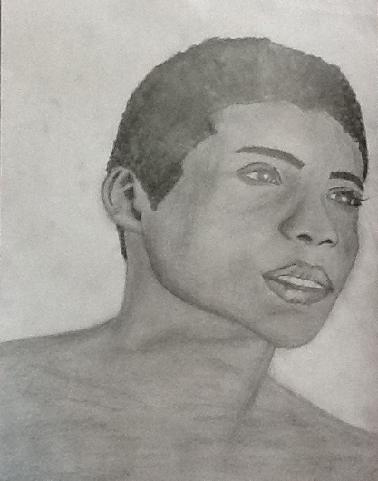

I find that people are often the source of most of my stress/anxiety. Ironically, I really enjoy drawing people, because I feel that it helps me better understand them. In the process of all of the drawing and shading that comes with portraits, I feel that I have a better understanding of the person.

After being so busy with school, I found myself slipping away from my hobby. I forgot that it was important to make time for things that made me happy.
I started drawing again, and I went back to my favorite subject, people. This is a portrait of my friend Miguel.
This is a portrait of Juliet Simms.